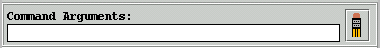

Because jCVS was designed to be configured by properties, and thus did not define "fixed" commands, jCVS requires that you enter all arguments on the command line. A future version of jCVS may offer a UI that provides for fixed commands, and would thus provide dialogs to collect the specific arguments for each command.
For example, if you were running the diff command, you would need to specify the revisions that you wished to diff. The arguments input field is where you would enter them. Thus, you might enter "-r1.2 -r1.3" in the arguments field, and then run the 'diff' command.
Once a command is run, the arguments field is cleared so that you do not accidentally reuse the arguments in the next command that you run.